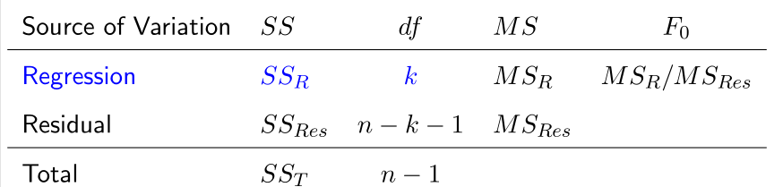

Hypothesis Testing
Assume ε∼Nn(0,σ2In) and y=Xβ+ε
迴歸顯著性
檢驗結果和因素之間是否有任何顯著的線性關係，i.e. H0:β1=⋯=βk=0 vs H1: 至少有一個 βj=0。Recall: anova > Test statistics
$$F_0=\frac{SS_R/k}{SS_E/(n-k-1)}=\frac{MS_R}{MS_{E}}\sim F_{k,n-k-1},\text{ under }H_0$$$\impliesRejectH_0\iff F_0>F_{k,n-k-1}$
Note: 在 H0 下，變量所有的變化（SS）完全基於隨機誤差，則迴歸模型不顯著。
ANOVA Table

Coefficient of Determination
R2=SSTSSR=1−SSTSSE∈[0,1]
越高的 R2 代表模型能解釋的變化越多。
Note：
- R2=1⟺SSE=0⟺ei=0,∀i⟺Y^i=Yi,∀i，i.e. 所有數據點都在同一個（超）平面上，X 完全解釋了 Y 的變異量。
- R2=0⟺SSR=0⟺Y^i=Yˉ,∀i，i.e. 無論 X 如何變動，預測值都相同，X 和 Y 之間沒有線性關係。
- 模型增加越多變量，R2 也會隨之提高，即使新變量與 Y 並無實質關係。
RAdj2=1−SST/(n−1)SSE/(n−p)
- RAdj2 會對添加不重要的變量進行懲罰。
- 只有當添加的變量能減少 σ^2=MSE 時，RAdj2 才會提高。
SLR 下的特例：只有一個解釋變數時，R2 恰為 X,Y 樣本相關係數 ρ 的平方：
R2=SSTOSSR=∑(Yi−Yˉ)2∑(Y^i−Yˉ)2=∑(Yi−Yˉ)2b12∑(Xi−Xˉ)2=∑(Xi−Xˉ)2∑(Yi−Yˉ)2(∑(Xi−Xˉ)(Yi−Yˉ))2=ρ2
其中 ρ=∑(Xi−Xˉ)2∑(Yi−Yˉ)2∑(Xi−Xˉ)(Yi−Yˉ)=∑(Yi−Yˉ)2b1∑(Xi−Xˉ)2，因此 ρ 與 b1 同號。但只有在 SLR 中 R2 才等於 ρ2，MLR 下沒有這麼簡單的關係。
單一係數的信賴區間與檢定
動機。 前面的 F 檢定只能回答「X 整體是否有解釋力」，若想知道某個特定係數 βj 的合理範圍或是否顯著，需要 βj 各自的信賴區間與檢定。
Recall（見 LSE 的性質）：β^=(XtX)−1Xty∼Np(β,σ2(XtX)−1)，記 (XtX)−1=[Cij]，則 β^j∼N(βj,Cjjσ2)。又 β^⊥SSE（因 β^ 是 y 的線性組合，SSE 由殘差 e⊥β^ 構成），故
S{β^j}β^j−βj∼tn−p,S{β^j}=CjjMSE
CI(j;α)≜[β^j±S{β^j}tn−p,1−α/2] 是 βj 的 1−α 信賴區間，∀j=0,1,⋯,k。
用信賴區間可做檢定 H0:βj=βj,0 vs H1:βj=βj,0：拒絕 H0⟺βj,0∈/CI(j;α)，通常取 βj,0=0。
多個係數的聯合信賴區間
動機。 若同時關心多個係數（例如 β1,β3,β9）是否同時落在各自區間內，不能直接把各自的 1−α 信賴區間相交，因為
P(β1∈CI(1;α),β3∈CI(3;α),β9∈CI(9;α))=1−α（通常 <1−α）
Bonferroni 方法：由 union bound，
P(j⋂βj∈CI(j;α0))≥1−j∑P(βj∈/CI(j;α0))=1−gα0
其中 g 為關心的係數個數。取 α0=α/g，則聯合信賴水準至少為 1−α：
Bonferroni joint confidence interval
對 g 個係數 βπ(1),⋯,βπ(g)，family confidence coefficient ≥1−α 的聯合信賴區間為
j=1∏gCI(π(j);gα)=j=1∏g[β^π(j)±S{β^π(j)}tn−p,1−2gα]
檢定 H0:βπ(j)=0,∀j vs H1: not H0 時，拒絕 H0 at level α⟺0∈/CI(π(j);α/g) for some j。這個信賴區間在向量空間中是一個立方體。
Remark：g 小時 Bonferroni 方法好用；但 g 很大時 α/g 太小，單個區間過寬，檢定力 (power) 會降低。而且 Bonferroni 得到的聯合信賴水準是「至少 1−α」，通常會大於 1−α，並非恰好相等。
恰好 1−α 的聯合信賴區間：由 多維常態的二次型定理，β^∼Np(β,σ2{β^})⟹(β^−β)tσ2{β^}−1(β^−β)∼χp2。用 S2{β^} 估計 σ2{β^}，且分子與 β^ 相關、分母與 e 相關，兩者獨立：
p(β^−β)t(S2{β^})−1(β^−β)∼χn−p2/(n−p)χp2/p∼Fp,n−p
於是 C∗(β^;α)={β:(∗)≤Fp,n−p,α} 恰為 β 的 1−α 信賴區間，這個區域在向量空間中是橢圓體 (ellipsoid)，體積比 Bonferroni 立方體小（相當於把立方體的角削圓）。
General Linear Hypothesis
Let T be an m×p matrix and rank(T)=m≤p, then
- Tβ^∼Nm(Tβ,σ2T(XtX)−1Tt).
- σ21(Tβ^−Tβ)t[T(XtX)−1Tt]−1(Tβ^−Tβ)∼χm2
- σ^2(Tβ^−Tβ)t[T(XtX)−1Tt]−1(Tβ^−Tβ)/m∼Fm,n−p where σ^2=MSE=SSE/(n−p)
H0:Tβ=c for some T and c
Under H0,E(Tβ^)=Tβ=c，檢定統計量：
F0=σ^2(Tβ^−c)t[T(XtX)−1Tt]−1(Tβ^−c)/m∼Fm,n−p under H0
Notation: Let (XtX)−1=C00C10⋮Ck0C01C11⋮Ck1……⋮…C0kC1k⋮Ckk=[Cij]
Tests for Individual Coefficients
H0:βj=0 versus H1:βj=0
F-Test
Special case of General Linear Hypothesis. Let T=(0,…,1,…,0), then m=1,Tβ=βj,c=0 and T(XtX)−1Tt=Cjj= the jth diagonal element of (XtX)−1
⟹F0=σ^2β^jtCjj−1βj/1∼F1,n−p under H0
Reject H0 if F0>F1,n−p;α one-side.
T-Test
Recall（見 單一係數的信賴區間與檢定）：β^j∼N(βj,Cjjσ2)
T0=Cjjσ^2β^j=se(β^j)β^j∼Tn−p under H0
Reject H0 if ∣T0∣>tn−p;α/2 two side.
Note:
- T02=F0
- 這是在給定其他變量在模型中時，xj 對該模型的貢獻。
General Linear Test Approach
動機。 Bonferroni 方法可以給出多個係數同時為 0 的 level ≤α 檢定，但可能過於保守。General Linear Test Approach (GLT) 提供一個 level 恰為 α 的檢定方法，且在有計算機時很容易計算。
Recall：SLR 特例 中，p=2，檢定 H0:β1=0 vs H1:β1=0 的統計量為
F∗=MSEMSR=SSE/(n−p)SSR/(p−1)=SSE/(n−p)(SSTO−SSE)/((n−1)−(n−p)),reject H0⟺F∗>Fp−1,n−p,α
一般想法：H1 假設模型是 full model，H0 假設模型是 reduced model（即 full model 中某些參數被設為 0），因此
Reduced model⊂Full model⟹Ω0⊂Ω1
其中 Ω0,Ω1 分別是兩模型設計矩陣的行空間。無論哪種假設，估計 y 都是把 y 投影到對應的 col space 上，記 y^Ω1,y^Ω0 分別為投影。
EX：H0:Y=β0+β2x2+ε vs H1:Y=β0+β1x1+β2x2+ε，則 X=[1,x2] 對應 H0，X=[1,x1,x2] 對應 H1。
因為兩種假設都在同一個 y 上估計，且 Ω0⊂Ω1：
∣∣y∣∣2=∣∣y^Ω1∣∣2+∣∣eΩ1∣∣2=∣∣y^Ω0∣∣2+∣∣eΩ0∣∣2⟹SSEF=∣∣eΩ1∣∣2≤∣∣eΩ0∣∣2=SSER
若簡單模型（reduced）與複雜模型（full）解釋能力接近，依簡約原則應選 reduced model，即 SSRR≈SSRF 時不拒絕 H0：
Reject H0⟺SSRR−SSRF is large⟺F∗∗=SSEF/dfF(SSER−SSEF)/(dfR−dfF)>F(dfR−dfF,dfF,α)
dfR−dfF 即 H0 下被設為 0 的參數個數。在 SLR 中可驗證 F∗∗=F∗（因 SSTO 在任何假設下不變，故 SSER−SSEF=SSRF−SSRR）。
GLT 三步驟：
- Fit the full model，得 SSEF,dfF
- Fit the reduced model，得 SSER,dfR
- F∗∗=SSEF/dfF(SSER−SSEF)/(dfR−dfF)∼H0F(dfR−dfF,dfF)
EX：Y=β0+β1x1+β2x2+β3x3+β4x4+ε。檢定 H0:β1=β2=0 vs H1: not H0：
F∗=SSEfm1234/(n−5)(SSEfm34−SSEfm1234)/(n−3−(n−5))>F(2,5,α){是：拒絕H0否：不拒絕H0